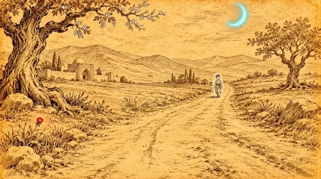

1-sahna — video, 16:9 (yotiq), 8 s

Nima bo'ladi
Uzoqdagi bola kameraga qarab yura boshlaydi va kattarib keladi; gullagan daraxtdan barglar uchadi
KameraJuda sekin push-in yo'l bo'ylab, bolaga qarab
Horizontal 16:9 video, 8 seconds, from the attached image. Very slow push-in along the road toward the boy. The small boy far away starts walking toward the camera with small steady steps and comes closer, getting bigger in the frame; he only walks forward and never turns back. White blossom petals drift slowly from the old tree, the grass sways gently, the blue crescent moon glows softly. The flat hand-drawn ink illustration style on warm paper stays exactly the same in every frame, like a living storybook drawing; it never turns into a photo, 3D or a different style. Alisher keeps the soft white outline glow hugging his silhouette edges in every frame. IMPORTANT: there is never any ring, circle, disc or ellipse of light above or behind anyone's head, not even for a moment; the top of the doppi cap stays clear. The small neon accents (the cyan-blue crescent moon, the red tulip and any glowing light already in the image) stay small and contained and never spread. Keep every person exactly as in the image for the whole clip: the same face, age, beard or no beard, embroidered doppi cap, clothes and colours; faces never change into other people. Silent video: no audio, no voices, no music. Nobody speaks; mouths stay closed or only smile. Negative: no text, no letters, no numbers, no subtitles, no captions, no logos, no brand names, no watermarks, no extra people, no extra hands, no ring above any head, no circle of light behind any head